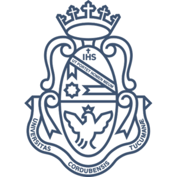

Educacion

UNC
Computacion
2018 - actualmente
Cordoba - Argentina
SENA
Tecnologo Mantenimiento de Equipos de Computo, Diseño e Instalacion de Cableado Estructurado
2014 - 2015
Bogota - Colombia
IED Nuestra Señora de Fatima
Bachiller Academico
2010 - 2011
Sasaima Cundinamarca - Colombia